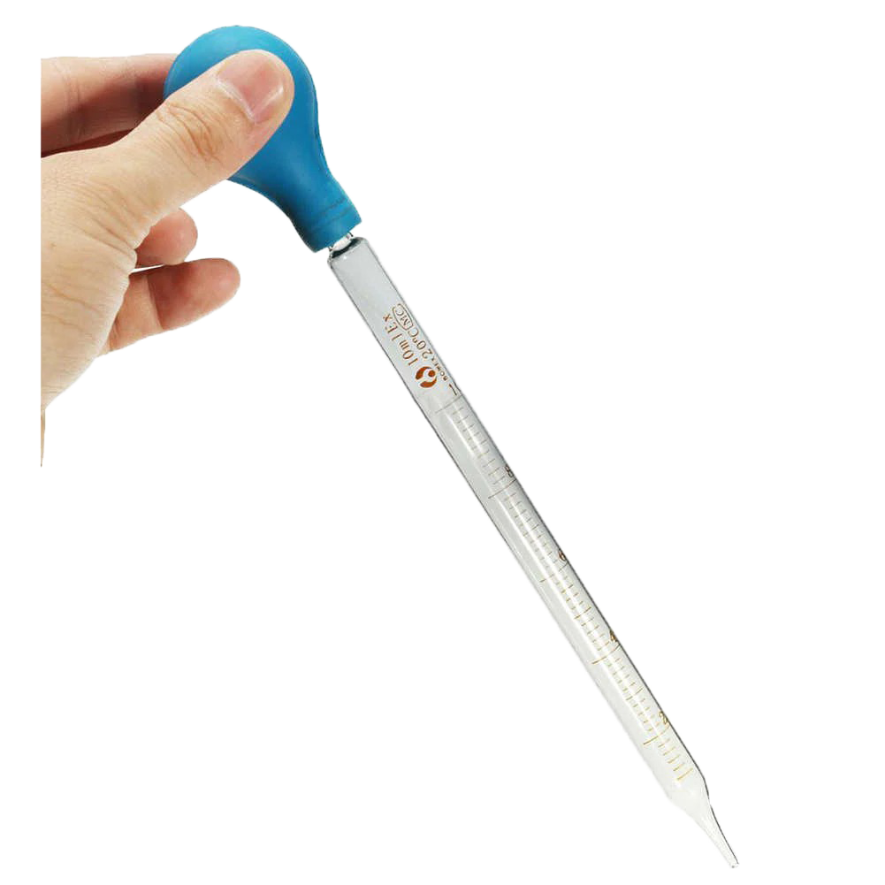
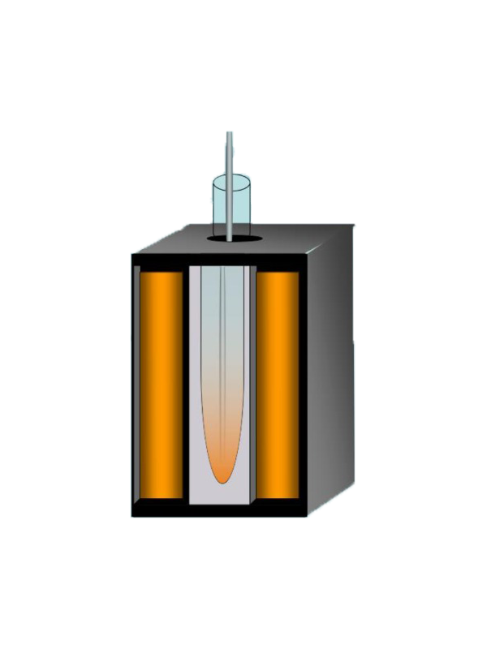
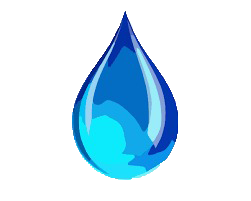

HAEMOGLOBIN ESTIMATION BY SAHLIS METHOD
Step3:Take water from beaker
Step4:Put water in comparator
Conclusion and measurement

Water Dropper

Comperator Box
Water Beaker

THIRD STEP-TEST TUBE IN COMPARATOR AND ADDING WATER TO GET COLOR